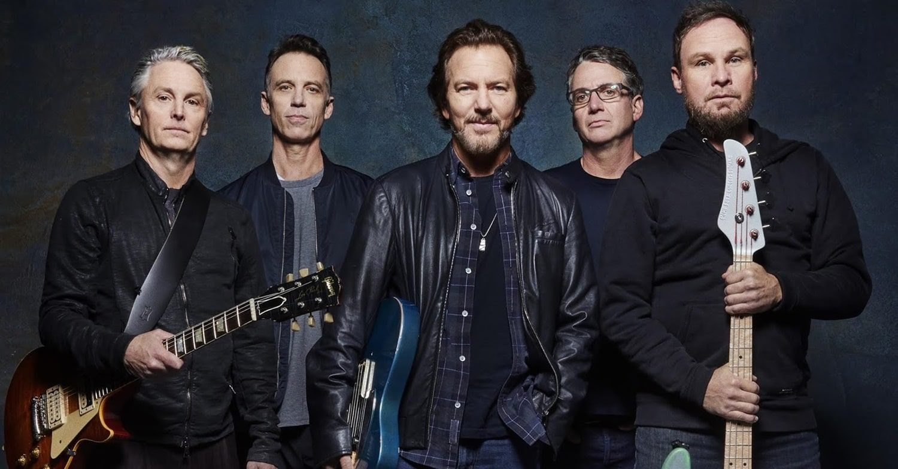
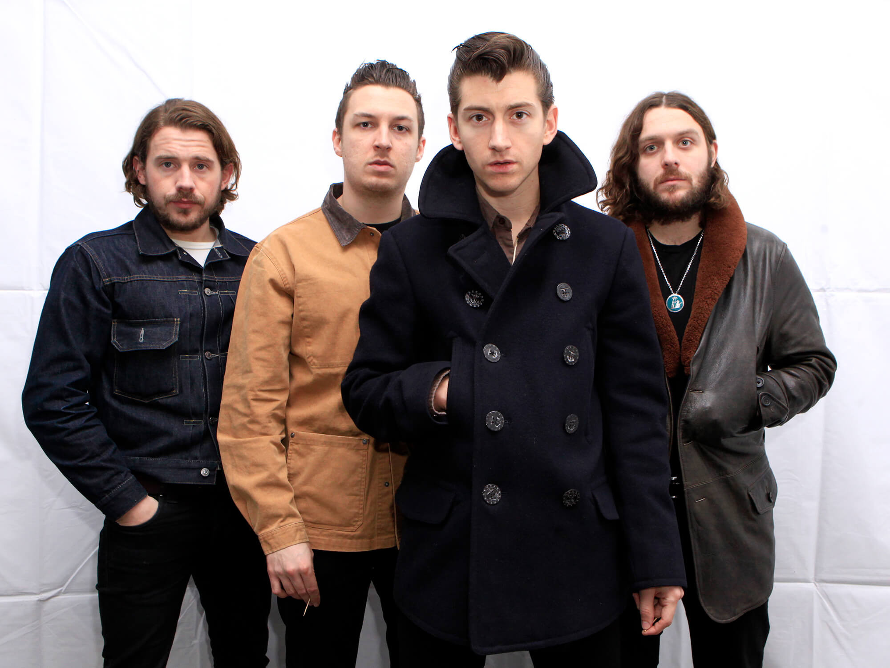

Bem-vindo ao Bandspedia - sua enciclopédia do Rock
Olá! Este site foi criado como desafio do Módulo 2 do curso de html da DIO no Bootcamp Front-End Santander por Luana Mattana Damin. A atividade proposta pelo professor foi criar uma versão diferente do site do Wikipedia utilizando apenas comandos html envolvendo semântica e acessibilidade para treinar o que aprendemos em aula.
No caso eu escolhi falar sobre bandas de Rock N'Roll e Rock Alternativo que eu gosto, extraindo informações do próprio Wikipedia. Criei esse nome Bandspedia e também meu próprio logo do site aproveitando minha formação em design.
Aqui você pode explorar informações sobre bandas icônicas do rock. Clique nos links ao lado para começar!
Rock
Rock (ou roque) é um termo abrangente que define um gênero musical de música popular que se desenvolveu durante e após a década de 1950. Suas raízes se encontram no rock and roll e no rockabilly que emergiram e se definiram nos Estados Unidos no final dos anos quarenta e início dos cinquenta e que, por sua vez, evoluíram do blues, da música country e do rhythm and blues. Outras influências musicais sobre o rock ainda incluem o folk, o jazz e a música clássica. Todas estas influências foram combinadas em uma estrutura musical simples baseada no blues que era "rápida, dançável e pegajosa".
No final da década de 1960 e início dos anos setenta, o rock desenvolveu diferentes subgêneros. Quando foi misturado com a folk music ou com o blues ou com o jazz, nasceram o folk rock, o blues-rock e o jazz-rock, respectivamente. Na década de 1970, o rock incorporou influências de gêneros como a soul music, o funk e de diversos ritmos de países latino-americanos. Ainda naquela década, o rock gerou uma série de outros subgêneros, tais como o soft rock, o glam rock, o heavy metal, o hard rock, o rock progressivo e o punk rock. Já nos anos oitenta, os subgêneros que surgiram foram a new wave, o punk hardcore e rock alternativo. E, na década de 1990, os subgêneros criados foram o grunge, o britpop, o indie rock e o nu metal.
O som do rock, muitas vezes, gira em torno da guitarra elétrica ou do violão e utiliza um forte backbeat (contratempo) estabelecido pelo ritmo do baixo elétrico, da bateria, do teclado, e outros instrumentos como órgão, piano, ou, desde a década de 1970, sintetizadores digitais. Junto com a guitarra ou teclado, o saxofone e a gaita, são por vezes utilizados como instrumentos solo. Em sua "forma pura", o rock "tem três acordes, um forte e insistente contratempo e uma melodia cativante".
A maioria dos grupos de rock é constituída por um vocalista, um guitarrista, um baixista e um baterista, formando um quarteto. Alguns grupos omitem uma ou mais destas funções e/ou utilizam um vocalista que toca um instrumento enquanto canta, às vezes formando um trio ou duo; outros ainda adicionam outros músicos, como um ou dois guitarristas e/ou tecladista. Mais raramente, os grupos também utilizam saxofonistas ou trompetistas e até instrumentos como violinos com cordas ou violoncelos.
(topo)Estilos do Rock
Início dos 1950 até 1960
Rock and Roll
O rock and roll surgiu nos subúrbios dos Estados Unidos no final dos anos 1940 e início da década de 1950 e rapidamente se espalhou para o resto do mundo. No começo, o novo estilo rock sofreu várias críticas negativas e algumas positivas, mas sempre atrapalhando seus trabalhos. Muitos diziam que o "novo" rock incentivava o satanismo. Suas origens imediatas remontam a uma mistura entre blues e country, mas com influência de vários gêneros musicais com o rhythm and blues. Em 1951, na cidade de Cleveland (no Estado do Ohio), o discotecário Alan Freed começou a tocar a mistura de blues, country e rhythm and blues para uma plateia multirracial e a ele é creditado a primeira utilização da expressão "rock and roll" para descrever a música.
A década de 1950 assistiu ao crescimento da popularidade da guitarra elétrica e o desenvolvimento de um estilo de rock and roll especificamente tocado por expoentes tais como Berry, Link Wray e Scotty Moore.
Também viu grandes avanços na tecnologia de gravação, como a gravação multi-faixas desenvolvida por Les Paul e o tratamento eletrônico de sons por produtores musicais inovadores como Joe Meek. Todos estes avanços foram fundamentais para a influência do rock posteriormente.

Os efeitos sociais do rock and roll foram massivos e mundiais. Muito além de um simples estilo musical, o rock and roll influenciou estilos de vida, moda, atitudes e linguagem. Alguns acreditam que o novo gênero pôde ter ajudado a causa do movimento dos direitos civis nos EUA, porque tanto jovens brancos quanto negros apreciavam a nova música. No entanto, até o início da década de 1960, grande parte do impulso inicial musical e do radicalismo social do rock and roll tinha se dissipado, com o crescimento de ídolos teen, uma ênfase nas danças frenéticas e o desenvolvimento de uma leve música pop adolescente. Nos anos 1960 surgiu o som da Motown. De 1961 a 1971, havia 110 músicas da gravadora na listas das 10 mais tocadas, e artistas como Stevie Wonder, Marvin Gaye, The Supremes, The Four Tops, e The Jackson 5, todos gravaram na Motown. Todos os cinco artistas da Motown foram introduzidos no Rock and Roll Hall of Fame.
(topo)Surf music
O rockabilly influenciou um som selvagem e principalmente instrumental chamado surf music[17] - apesar da cultura surf ser concorrente do pop rock. Este estilo, que tem, como grandes exemplos, Dick Dale e os The Surfaris nos EUA e os Shadows, caracterizou-se por tempos musicais rápidos, percussão inovadora e sons de guitarra com reverbs e ecos. Grupos da Costa Oeste norte-americana como The Beach Boys e Jan and Dean reduziram a velocidade dos tempos musicais e adicionaram harmonias vocais que criaram aquilo que ficaria conhecido como o "California Sound".
Era de Ouro (1963-1974)
No Reino Unido, o movimento trad jazz levou muitos artistas do blues a visitar o país. Enquanto estava desenvolvendo o Concorde, o sucesso "Rock Island Line", de Lonnie Donegan, em 1955, foi a principal influência e ajudou a desenvolver uma nova tendência de grupos musicais de skiffle em todo a Grã-Bretanha, incluindo os Beatles. Foi em solo britânico que se desenvolveu uma grande cena rock and roll, sem as barreiras raciais que mantiveram a "gravações de raça" ou rhythm and blues separados nos Estados Unidos.
Cliff Richard emplacou o primeiro sucesso britânico de rock 'n' roll com "Move It", que efetivamente inaugurou o rock britânico. No início da década de 1960, o seu grupo de apoio The Shadows foi um dos vários grupos a obter sucessos instrumentais. Enquanto o rock 'n' roll caminhava em direção a um pop leve e a baladas fora de moda, grupos de rock britânicos, fortemente influenciados por pioneiros do blues-rock como Alexis Körner, tocavam cada vez mais em clubes e bailes locais e se distanciava do rock and roll norte-americano.
Até o final de 1962, a cena do rock britânico tinha ganhado grupos como The Beatles debruçados sobre um vasto leque de influências que incluíam a soul music, o rhythm and blues e a surf music. Inicialmente, eles reinterpretaram sucessos-padrão norte-americanos, tocados para dançarinos de twist, por exemplo. Esses grupos acabaram introduzindo em suas composições originalidade, som distinto e conceitos musicais cada vez mais complexos. Em meados de 1962, os Rolling Stones foram um dos numerosos grupos surgidos e que mostravam uma influência blues cada vez maior, juntamente com os Animals e os Yardbirds. No fim de 1964, as bandas The Kinks, The Who e The Pretty Things. Perto do final da década, grupos de rock britânico com influencia das subculturas Mod e Hippie, começaram a explorar estilos musicais psicodélicos.
(topo)Garage Rock
A Invasão Britânica gerou uma onda de imitadores que tocavam principalmente para audiências locais e fizeram gravações baratas, que mais tarde seria chamado de "garage rock" (rock de garagem). Algumas canções desta tendência foram incluídas na coletânea musical Nuggets. Dentre algumas das bandas mais conhecidas deste subgênero, estão The Sonics, Question Mark & the Mysterians e The Standells.
(topo)Power Pop
A Invasão Britânica também gerou uma outra onda de imitadores no início dos anos 1970, porém desprovidos da violência e do descontrole da maioria das bandas de garagem. Da união entre as harmonias de algumas músicas dos Beatles e Beach Boys e o peso do The Who surgiu o power pop. Como não diferiam muito dos artistas que imitavam, raramente chegaram às grandes plateias, que estavam mais interessadas no experimentalismo da época. Dentre as primeiras bandas e artistas citam-se Badfinger, Raspberries, Big Star e Emitt Rhodes..
(topo)Movimentos Culturais
No final da década de 1950, o movimento beatnik foi associado ao movimento antiguerra surgido contra a nuclearização do planeta, especialmente o britânico Campaign for Nuclear Disarmament. Ambos foram associados à cena jazz e ao crescimento do movimento da música folk.
Folk Rock
A cena folk foi feita de amantes da folk music que gostavam de instrumentos acústicos, de canções tradicionais e de blues com uma mensagem socialmente progressista. O cantor Woody Guthrie é considerado o pioneiro deste subgênero. Bob Dylan encabeçou o movimento musical e levou a um grande público canções como "Blowin' in the Wind" e "Masters of War", chamadas de "canções de protesto".
Dentre outros artistas de destaque do folk rock norte-americano, estão Simon & Garfunkel, Joan Baez, The Mamas & the Papas, Joni Mitchell, Bobby Darin e The Band. Na Grã-Bretanha, o grupo Fairport Convention foi o primeiro a adaptar as técnicas do rock britânico ao folk. Foram seguidos por bandas como Steeleye Span, Lindisfarne, Pentangle e Trees. O francês Alan Stivell seguia a mesma abordagem.
(topo)Rock psicodélico
A música psicodélica surgiu dentro da cena folk, quando o grupo The Holy Modal Rounders popularizou o termo em 1964. Com um conhecimento adquirido que incluía as músicas folk e jug band, grupos como Grateful Dead e Big Brother & The Holding Company fizeram fama neste subgênero. O auditório The Fillmore, em San Francisco, foi um dos principais palcos para grupos - originalmente de jug band - como o Country Joe and the Fish e Jefferson Airplane. Em outra parte, enquanto o grupo The Byrds emplacava o hit "Eight Miles High", a banda The 13th Floor Elevators batizava seu disco com o nome "The Psychedelic Sounds of the 13th Floor Elevators". A música ficava cada vez mais associada à oposição à Guerra no Vietnã..
Na Inglaterra, o grupo Pink Floyd vinha desenvolvendo desde 1965 o rock psicodélico dentro da cultura underground local. Em 1966, surgiu a banda Soft Machine e o cantor Donovan emplacou "Sunshine Superman", canção influenciada pela folk music, que se tornou uma das primeiras gravações pop psicodélicas. Em agosto daquele ano, os Beatles lançaram Revolver, álbum caracterizado pela psicodelia nas faixas "Tomorrow Never Knows" e "Yellow Submarine", assim como a memorável capa do disco. Ao mesmo tempo, nos EUA, os Beach Boys "respondiam" com o LP Pet Sounds. A partir de uma bagagem cultural blues rock, o grupo Cream estreou em dezembro e Jimi Hendrix fazia sucesso em terras britânicas antes de retornar para o solo norte-americano.
A cena psicodélica verdadeiramente engatou em 1967 com os lançamentos de LPs como Sgt. Pepper's Lonely Hearts Club Band, dos Beatles, e Their Satanic Majesties Request, dos Stones, além dos álbuns homônimos de estreia das bandas The Doors e Jefferson Airplane. Com o Verão do Amor atingindo seu pico, o Festival Pop de Monterey destacou as performances de Jefferson Airplane e apresentou Janis Joplin e Jimi Hendrix. O auge desta tendência de grandes festivais de rock foi o Festival de Woodstock, em 1969. Bandas da cultura Paisley Underground de Los Angeles também se destacaram neste cenário pós-final de década.
(topo)Rock progressivo
As bandas de rock progressivo foram além das fórmulas estabelecidas dentro do rock e passaram a experimentar diferentes instrumentos, tipos de canções e formas musicais. Algumas bandas como Beatles, Eric Burdon & The Animals,The Doors, Pink Floyd, Moody Blues e Procol Harum experimentaram novos instrumentos e incluíram seções com instrumentos de sopro e orquestras. Muitas dessas bandas caminharam das convencionais canções de três minutos em direção a composições mais longas, com acordes cada vez mais sofisticados. Inspirados em artistas daquela época, os "proto-prog", novas bandas surgiram e criavam seu próprio gênero, inicialmente baseado no Reino Unido, depois do lançamento do disco de estreia do grupo King Crimson, em 1969, chamado "In the Court of the Crimson King".
As bandas de rock progressivo tomavam emprestado ideias musicais da música clássica, do jazz, da música eletrônica e da música experimental. Suas canções variavam de umas belas e exuberantes melodias para atonais, dissonantes, e complexas harmonias. Poucos grupos atingiram grande sucesso comercial, mas muitos formaram uma legião de seguidores, entre os quais, Pink Floyd, Yes, Marillion, Rush, Jethro Tull, Supertramp, Genesis e alguns outros grupos menos notáveis que foram capazes de alavancar a complexidade de suas canções no bojo de sucesso convencionais, angariando um público maior.
(topo)Glam Rock
O glam rock emergiu de dentro das cenas psicodélica e art rock britânicas no final da década de 1960, capitaneado por artistas como T. Rex, Mott the Hoople, Elton John, Roxy Music, Steve Harley and Cockney Rebel, David Bowie, Alice Cooper, Sweet e Gary Glitter, e também inspirados na performance de artistas como The Cockettes, Lindsay Kemp, Syd Barrett (vocalista do Pink Floyd, banda a qual David Bowie regravou "See Emily Play") e Eddie Cochran (de quem o T. Rex regravou "Summertime Blues")..
(topo)Segunda metade da década de 1970 e anos 1980
Hard Rock e Heavy Metal
Uma segunda leva de bandas de rock do Reino Unido e Estados Unidos se tornou popular durante o início da década de 1970. Grupos como Nazareth, Grand Funk Railroad, Led Zeppelin, Kiss, Deep Purple, Queen, Alice Cooper, Judas Priest, Status Quo, Aerosmith, Black Sabbath e Uriah Heep; da Austrália, vinha AC/DC; da Alemanha, Scorpions e, do Canadá, Rush. Eles intensificaram o modo de tocar, conduzindo suas guitarras rumo ao hard rock.

Este subgênero pereceu em direção a imitação caricatural no final daquela década. Muitos de seus adeptos lançaram álbuns mais próximos do rock progressivo ou até da disco music. Poucas bandas - entre elas, Kiss, Black Sabbath, Queen, AC/DC, Led Zeppelin, Aerosmith, Rush e Scorpions - mantiveram um número significativo de fãs e, ocasionalmente, emplacaram sucessos comerciais.
(topo)Arena Rock
As origens do arena rock podem ser encontradas nos grandes concertos de bandas como Kiss, The Beatles, The Rolling Stones, Led Zeppelin, The Who e Black Sabbath que "criaram a base para performances ao vivo em grandes estádios e arenas ao redor do globo". O estilo em si, porém, foi criado por artistas como Boston, Styx, Foreigner, Journey, Queen, Kansas, Peter Frampton e - em sua "era Phil Collins" - Genesis. Estes grupos continuariam a lotar os maiores estádios do mundo durante a maior parte da década de 1970 e mais, ajudaram a popularizar o arena rock nos anos oitenta.
Essa popularidade atingiu o ápice na primeira metade da década de 1980, com bandas como Heart, REO Speedwagon, Cheap Trick, Asia, Bon Jovi, Kiss, Aerosmith, Guns N' Roses e Van Halen, que "ficaram no auge de sua popularidade, vendendo milhões de discos". Naquele momento, a popularidade do arena rock somente parecia crescer, mas o subgênero entrou em declínio e perder adeptos para o rock alternativo e o grunge por muitas razões, entre as quais as "limitações do estilo". Muitos fãs mais jovens sentiram uma ligação mais pessoal com gêneros como o punk, a New wave (música)new wave e o indie rock, enquanto fãs mais velhos cansaram-se do arena rock. Outras causas incluem o "declínio nas vendas de ingressos e álbuns" e a redução do tamanho dos estádios. No momento que a MTV informou sobre o estilo: "isso já não é mais relevante".
(topo)Punk Rock
As letras do punk rock são tipicamente francas e conflituosas em comparação com outros gêneros musicais populares e frequentemente abordam questões sociais e políticas. Canções como "Career Opportunities", do Clash, e "Right to Work", do Chelsea, lidam com o desemprego e a dura realidade da vida urbana. Principalmente em seu início (final do ano de 1976, com o lançamento do single "New Rose" do The Damned em outubro), o punk britânico tinha como objetivo central ultrajar e se chocar com sistema vigente. Clássicos de 1977 dos Sex Pistols, como "Anarchy in the UK" e "God Save the Queen", abertamente afrontavam o sistema político e os costumes sociais britânicos. "O punk foi uma completa revolta cultural. Foi uma grave confrontação com o lado obscuro da história e da cultura, com as fantasias da direita, com os tabus sexuais, uma investigação de maneira minuciosa que nunca havia sido feito antes por qualquer geração".
(topo)New Wave
punk rock atraiu devotos dentro de escolas de artes inglesas. Logo surgiram bandas com abordagens mais letradas e artísticas, como a banda Joy Division, que precedeu bandas como Siouxsie and the Banshees, Wire, Magazine e Public Image. Para essas bandas, foi criado o termo pós-punk, e para as outras que flertavam apenas com o pop, foi denominado o New Wave. Em alguns círculos, o termo New Wave começou a ser usado para descrever e diferenciar bandas abertamente "menos" punk.
Se o punk rock foi um fenômeno social e musical, ele não caminhou em direção a recorde de vendas (pequenas gravadoras específicas como a Stiff Records tinham lançado muitos artistas punks até à época). O mesmo se deu com o número de execuções nas estações de rádio norte-americanas, que continuou a ser dominada pelo formato mainstream, tais como a disco music e vertentes do rock comercial. Executivos das gravadoras, a maioria deles foi iludido pelo movimento punk como algo vendável, reconheceram o potencial da New Wave como estilo mais acessivo e começaram a assinar e comercializar qualquer banda que pudesse reivindicar uma conexão remota entre punk e new wave. Muitas dessas bandas, como The Cars e The Go-Go's eram essencialmente bandas de pop disfarçadas de new wave privilégios reais; outras, entre as quais The Police e The Pretenders, exploraram e deram impulso ao sucesso inicial dentro desse movimento e colheram frutos de uma carreira longa e artisticamente consagrada.
(topo)Glam Metal
Na década de 1980, o rock popular se diversificou. Este período também viu uma Nova Onda do Heavy Metal Britânico ganhar popularidade com bandas como Iron Maiden e Def Leppard. A primeira metade daquela década viu Eddie Van Halen realizar inovações musicais com a guitarra, enquanto os vocalistas David Lee Roth (do Van Halen) e Freddie Mercury (do Queen, tal como havia feito durante toda a década de 1970) estiveram na linha de frente dos artistas mais performáticos. Concomitantemente, um new wave mais pop permaneceu populares, com artistas como Billy Idol e The Go-Go's atingindo fama. No coração dos Estados Unidos, o rock popularizou nomes como Bruce Springsteen, Bob Seger, Donnie Iris, John Cougar Mellencamp e outros. Com o álbum "Reckless", Bryan Adams seguia rumo a uma bem-sucedida carreira comercial. Liderados pelo cantor folk Paul Simon e pela antiga estrela do rock progressivo Peter Gabriel, o rock se fundiu com uma variedade de estilos de música popular ao redor do mundo. Esta fusão ganharia o nome no mundo anglo-saxão de "world music" e incluiu fusões como rock indígena. Ainda naquela década, formas mais extremas do rock evoluíram. No início dos anos oitenta, o som áspero e agressivo do thrash metal atraiu um grande público underground. Algumas bandas como Metallica e Megadeth caminharam em direção ao sucesso comercial.
Um dos subgêneros mais populares da década de 1980 foi o glam metal. Influenciado por vários artistas do hard rock/heavy metal da década anterior, tais como Aerosmith, Queen, Kiss, Alice Cooper, Sweet e New York Dolls, a primeira leva de bandas de glam metal que ganharam notabilidade foram: Mötley Crüe, Skid Row, W.A.S.P., Ratt, Poison, Quiet Riot, além da mais conhecida delas -mas formada nos anos setenta-, Kiss. Ficaram conhecidos pelo estilo de vida excessivo, que se refletia no vestuário, na maquiagem e nos cabelos espalhafatosos. Suas canções também eram geralmente focadas na tríade sexo, bebidas e drogas.
Em 1987, surgiu uma nova geração de artistas do glam metal, entre os quais Winger, Bon Jovi, L.A. Guns, Poison e Faster Pussycat. Formado a partir da fusão de integrantes do L.A. Guns e do Hollywood Rose, os Guns N' Roses emergiram desta cena glam rumo a um grande sucesso comercial, embora eles não sejam categorizados como uma típica banda de glam metal como as demais citadas neste tópico.
(topo)Rock Alternativo
As primeiras bandas de rock alternativo - R.E.M., The Feelies e Violent Femmes - combinaram suas influências punks com outras de folk music e do rock mainstream (comercial). Destas, o R.E.M. foi a de maior êxito imediato; seu álbum de estreia "Murmur", de 1983, figurou no Top 40 da Billboard e inspirou uma série de seguidores, as bandas de jangle pop.[24] Uma das muitas cenas do jangle pop no começo dos anos oitenta foi a "Paisley Underground", em Los Angeles, que buscava inspiração em artistas da década de 1960 e incorporar a psicodelia, as ricas harmonias vocais e a interação da guitarra do folk rock, bem como de bandas que influenciaram movimentos musicais underground como o Velvet Underground.
O R.E.M. e o Hüsker Dü foram modelos para uma grande parte dos artistas alternativos dos anos oitenta, de forma que conseguiriam aproximar suas carreiras.[24] Na segunda metade daquela década, a cena alternativa e as rádios universitárias norte-americanas eram dominadas pelas chamadas bandas college rock, como The Pixies, They Might Be Giants, Camper Van Beethoven, Dinosaur Jr e Throwing Muses - bem como por sobreviventes do post-punk britânico. Outro estilo ascendente dentro do rock alternativo foi o noise rock das bandas Sonic Youth, Big Black, Butthole Surfers, entre outras. No final daquela década, um número crescente de grupos alternativos assinavam contratos com grandes gravadoras. Enquanto no início grandes gravadoras que assinaram com o Hüsker Dü e os Replacements obtiveram pouco sucesso, outros artistas que seguiram o mesmo caminho e também assinaram com grandes selos, como os casos do R.E.M. do Jane's Addiction, alcançaram grandes vendagens de discos que conduziram anos depois em uma ruptura com o alternativo.[26][27] Algumas bandas como os Pixies tiveram um grande sucesso no exterior, enquanto eram ignorados em nível local.[24] No início da década de 1990, a indústria fonográfica foi alvoroçado sobre possibilidades de comercialização do rock alternativo e ativamente incitou grupos alternativos como o Dinosaur Jr, Firehouse, Pearl Jam e Nirvana.
(topo)Década de 1990
Grunge: foi um estilo de música voltado para sons pesados e distorcidos, mas sem ser metal. A principal banda desse estilo era o Nirvana, que tinha um som voltado para o alternativo. Bandas como Soundgarden e Alice in Chains tinham um estilo mais inspirado no metal e no hard rock, Pearl Jam puxava mais para o lado do hard rock, rock clássico e rock alternativo. Outras bandas como Stone Temple Pilots, chegaram no mainstream depois da consolidação do movimento Grunge. Muitas dessas bandas atingiram o 1º lugar nas paradas no mundo todo e até hoje vê-se influências desse movimento em bandas como Nickelback, Everclear e Seether.
Britpop: algumas bandas inglesas, que por possuírem uma estética similar, embora sem representar um movimento unitário, costumam ser denominadas britpop. Entram nesta denominação grupos pop como Blur e Oasis assim como grupos menos comerciais como Pulp, Suede, The Stone Roses e Supergrass.
Riot grrrl: a grosso modo, uma versão feminista de punk rock e hardcore, com letras que deixam transparecer o ativismo pela causa feminista. As suas representantes incluem L7, Bikini Kill, Sleater-Kinney, Babes in Toyland e Bratmobile.
Neopsicodelismo: os ideais de paz e amor são retomados, mas sem a ingenuidade dos anos 1960. Exemplo de bandas: U2 (oriundo do movimento pós-punk do início da década de 1980), R.E.M., Smashing Pumpkins, Cake, entre outros.

Metal progressivo: aliando o peso do heavy metal à psicodelia do rock progressivo, algumas bandas deste estilo fazem dos seus membros referências para os entusiastas do heavy metal e, em alguns casos, do rock de uma forma geral. O exemplo mais proeminente é o Dream Theater, cujos integrantes são cultuados por seu talento (como o guitarrista John Petrucci, o tecladista Jordan Rudess e o baterista Mike Mangini). Outros exemplos de bandas neste estilo incluem, Shadow Gallery, Evergrey, Symphony X, Queensryche e Vanden Plas.
Metal alternativo: é uma forma eclética de heavy metal. Algumas bandas surgidas, com esse estilo, são: Faith No More, Alice In Chains, Living Colour, Deftones, Tool, Godsmack, Evanescence, System of a Down e Three Days Grace .
Indie rock: bandas de garagem que participam do circuito "independente", fora do mainstream, como: Radiohead, Pixies, Dinosaur Jr., The Strokes,The Libertines, White Stripes, Coldplay, Arctic Monkeys, Travis, Belle & Sebastian e Communiquè (banda de São Francisco), além de algumas bandas britpop.
Post rock: estilo de rock oriundo do início dos anos 1990, quando algumas bandas iniciaram uma ousada proposta de unir elementos do rock alternativo com o rock progressivo. Slint foi considerada a banda precursora do estilo, seguido também por Coheed and Cambria.
Indie rock: bandas de garagem que participam do circuito "independente", fora do mainstream, como: Radiohead, Pixies, Dinosaur Jr., The Strokes,The Libertines, White Stripes, Coldplay, Arctic Monkeys, Travis, Belle & Sebastian e Communiquè (banda de São Francisco), além de algumas bandas britpop.
Nu metal: também conhecido como new metal ou nu-metal, é caracterizado por bandas que misturam outros estilos musicais nas suas composições, notadamente rap ou música eletrônica. Por causa disso, é ignorado pelos entusiastas puristas de heavy metal. Bandas deste estilo incluem Slipknot, Korn, Limp Bizkit, P.O.D., Otep, Linkin Park e Papa Roach. Alguns atribuem a origem do estilo ao Faith No More, enquanto outros remetem à sonoridade adoptada pelo Pantera a partir do seu quinto disco, Cowboys From Hell (91).
Pop punk: uma mistura de punk rock, pop e o ska de Less Than Jake, o Pop Punk começou com um cenário independente muito forte, com diferentes estratégias de divulgação. Alguns representantes desse estilo: Yellowcard, Green Day, Blink-182, Sum 41 e The Offspring.

Década de 2000
Com o pop em alta, o rock parecia ter perdido a força. No entanto, uma nova vertente do estilo, mais consciente sobre a relação do rock e a diversidade da música surgiu, demonstrando toda a vitalidade do ideal do "rock". Grupos com influências diversas, alguns deles eram excessivamente influenciados por outros estilos de música, havendo também aqueles que preferiam manter a crueza dos fundamentos. Tendo em comum, porém a aceitação da heterogeneidade e a exaltação da história trilhada pelo rock até então, motivo pelo qual muitas das bandas surgidas nessa época serem acusadas de apenas "requentar" fórmulas já expostas por outras bandas..
Algumas bandas viraram "queridinhos" da mídia e foram chamados de "the next big thing": The Strokes The Vines, The Hives, Yeah Yeah Yeahs, Interpol, Libertines e White Stripes, tendo, no entanto, apenas uma importância módica na cultura pop..
No outro lado da questão, algumas bandas surgiram e se estabeleceram distante de círculos hypados dos jornais de Londres e das pistas de dança modernas. Algumas delas são: Queens of the Stone Age e The Mars Volta..
Indie rock: O indie rock dessa década (que se afastou completamente da proposta original de rotular bandas auto-produzidas) perdeu toda a ideia dos anos 1990 e ficou mais conhecido por serem bandas de rock alternativo se aproximando do pop, os diversos subgêneros criados com esse estilo são marcados pelo revivalismo do pós-punk dos anos 1980 só que feito de um jeito mais contemporâneo. Típicas bandas influenciadoras: Gang of Four, Blondie, Joy Division, The Cure. Alguns exemplos desse estilo: The Hives, Franz Ferdinand, Bloc Party, Kaiser Chiefs, 'The Coral, Raconteurs, She Wants Revenge, Arctic Monkeys etc. O indie rock dos anos 2000, acabou levando a muitos outros estilos, alguns até hoje não rotulados. A situação caminhou a tal ponto que é quase impossível saber o que é e o que não é indie rock.
Stoner Rock: um estilo com guitarras bem graves e pesadas, acordes mais lentos e com fortes influências psicodélicas. Entre bandas famosas deste estilo, estão: Queens of the Stone Age, Death From Above 1979, Wolfmother e Fu Manchu..
(topo)